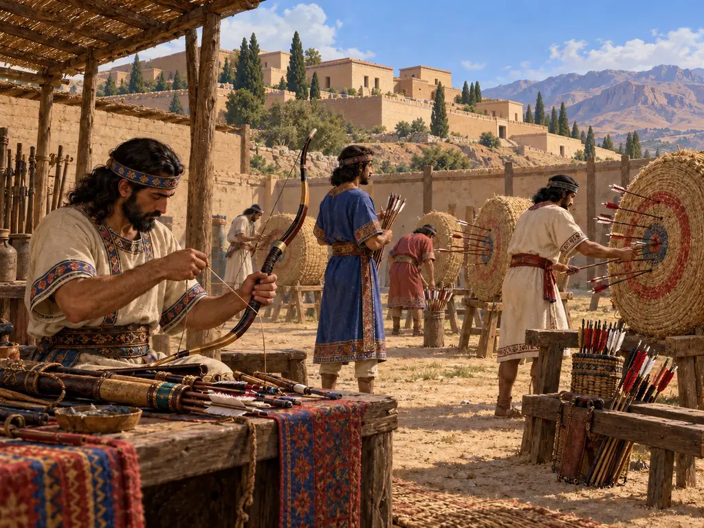
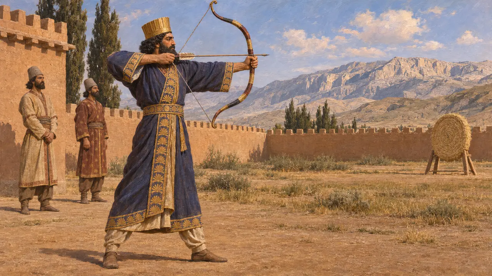
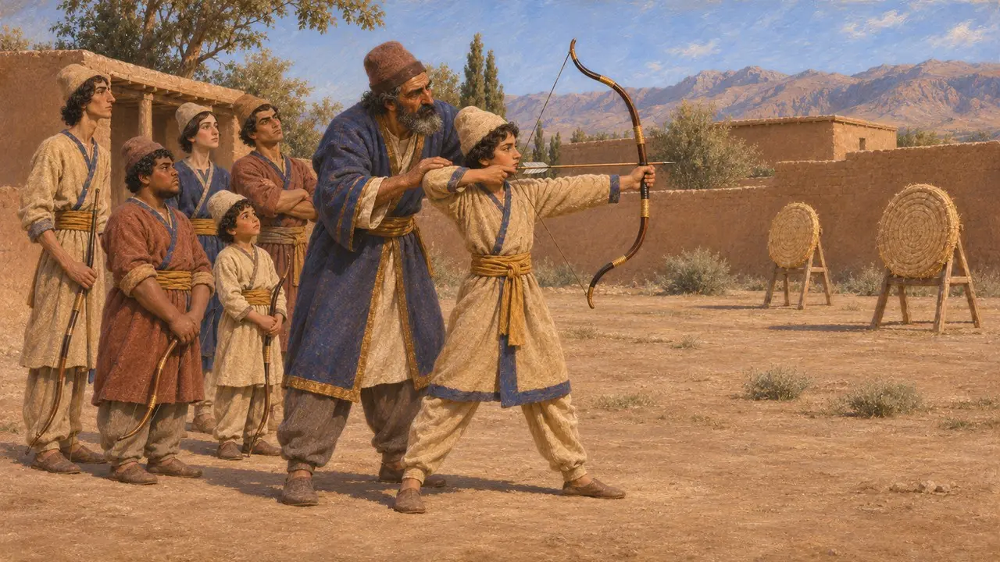
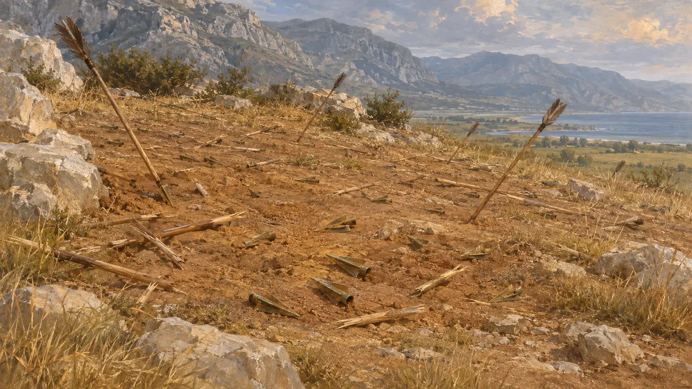
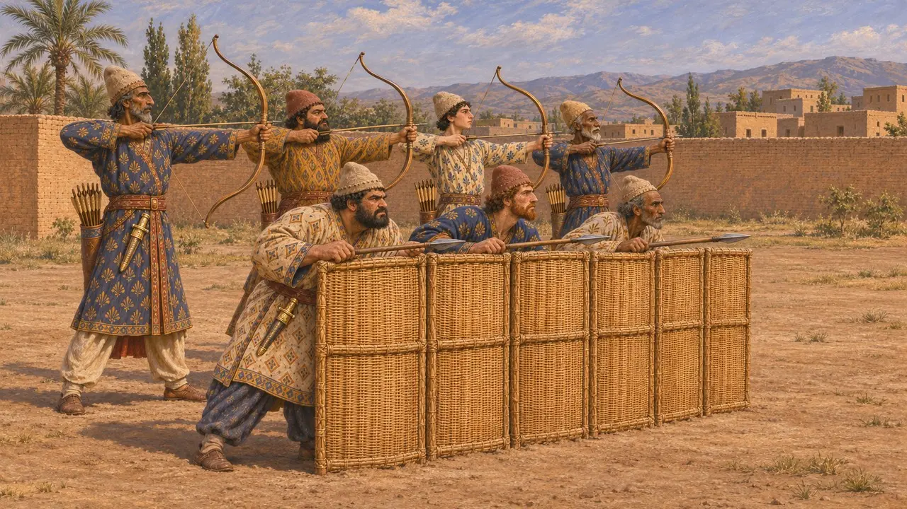
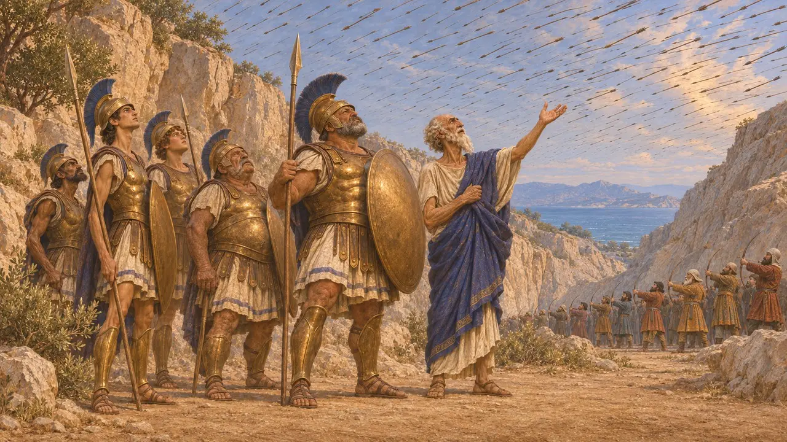

Campo de Tiro com Arco
Campo de treino para o arco, a principal arma da infantaria persa, séculos VI-V AEC
No jogo: Nível 1: O Túmulo do Fundador
O arco era a principal arma do soldado de infantaria persa. Escritores gregos dizem que os meninos persas aprendiam a atirar desde a infância, e Dario se declarou um bom arqueiro em sua inscrição tumular. Nenhum campo de tiro aquemênida construído para esse fim foi escavado, de modo que a prática provavelmente ocorria em terreno aberto perto de cidades, propriedades e acampamentos.
No jogo: O Campo de Tiro com Arco treina arqueiros que têm alcance maior que o dos saqueadores, mas precisam ficar atrás dos lanceiros. Isso simplifica a história: muitos soldados de infantaria persas levavam arco e lança, e o jogo os divide em tipos de tropa distintos.

O rei como arqueiro
Nos registrosEm sua inscrição tumular em Naqsh-e Rostam, Dario enumera suas próprias habilidades e diz que era um bom arqueiro tanto a pé quanto a cavalo. No relevo de Behistun, ele segura um arco diante dos reis rebeldes cativos. As moedas reais de ouro e prata cunhadas pela primeira vez sob Dario mostram o rei segurando ou retesando um arco, o que sugere que o arco simbolizava tanto a força real quanto a guerra.
DNb; Behistun relief (DB); P. Briant, From Cyrus to Alexander, 2002

A educação dos meninos
Relato antigoHeródoto conta que os meninos persas aprendiam três coisas dos cinco aos vinte anos: montar, atirar com o arco e dizer a verdade. Estrabão oferece um quadro posterior e mais completo de jovens persas treinados em grupos para atirar com o arco, arremessar o dardo e suportar privações. A Ciropédia de Xenofonte descreve uma educação semelhante, mas é uma obra idealizada e não pode ser tomada como uma simples descrição.
Herodotus 1.136; Strabo 15.3.18; Xenophon, Cyropaedia 1.2

Pontas de flecha no solo
Nos registrosOs escavadores do Tesouro de Persépolis encontraram grandes quantidades de pontas de flecha entre as armas ali armazenadas. Nas Termópilas, a escavação de Spyridon Marinatos na colina de Kolonos, em 1939, recuperou muitas pontas de flecha, incluindo tipos de bronze de três lâminas comuns no mundo persa. Os achados condizem com o relato de Heródoto, segundo o qual os últimos defensores foram sobrepujados por projéteis naquela colina.
E. Schmidt, Persepolis II, 1957; S. Marinatos, excavations at Thermopylae, 1939; Herodotus 7.225

Arco e muralha de escudos
DisputadoHeródoto conta que os persas de Xerxes levavam escudos de vime, lanças curtas, grandes arcos com flechas de junco e punhais, e que em Plateia lutaram atrás de uma muralha de escudos de vime fincados no chão. Os guardas de tijolos vidrados de Susa empunham lança e arco. Os historiadores ainda debatem se as fileiras da frente portavam escudos e lanças enquanto as de trás disparavam flechas, ou se a maioria dos homens usava as duas armas alternadamente.
Herodotus 7.61; Herodotus 9.61-62

Lutando à sombra
Lenda posteriorHeródoto conta que, antes das Termópilas, um homem de Tráquis advertiu que os arqueiros persas esconderiam o sol com suas flechas. O espartano Dieneces respondeu que era uma boa notícia, pois assim lutariam à sombra. A história é um dito grego sobre a coragem e mostra como os gregos se lembravam da arquearia persa, sem servir como medida dela.
Herodotus 7.226
Fontes
- Herodotus 1.136
- Herodotus 7.61
- Herodotus 9.61-62
- DNb
- E. Schmidt, Persepolis II, 1957
- P. Briant, From Cyrus to Alexander, 2002